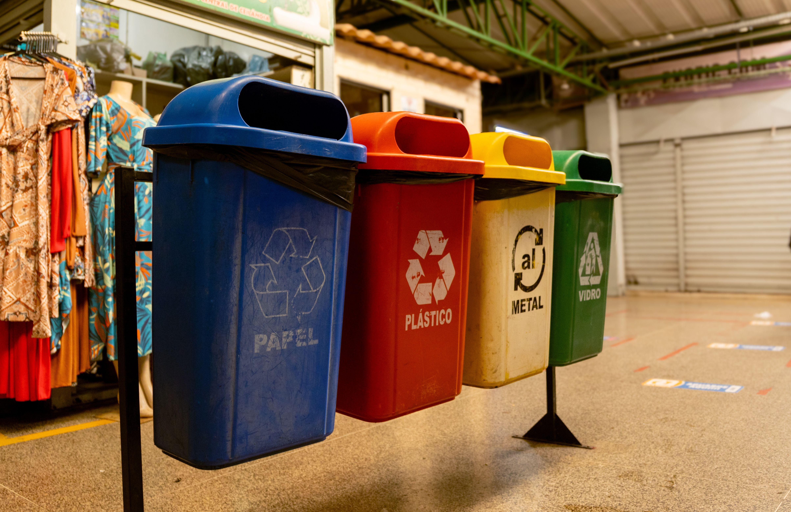
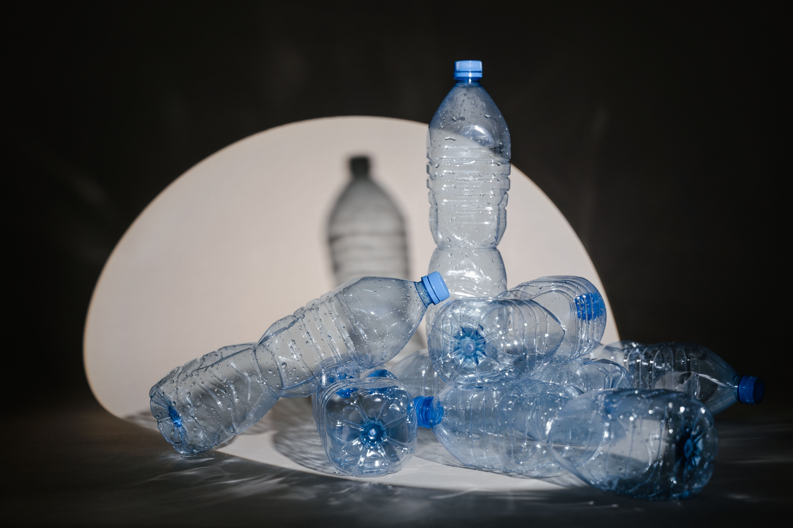
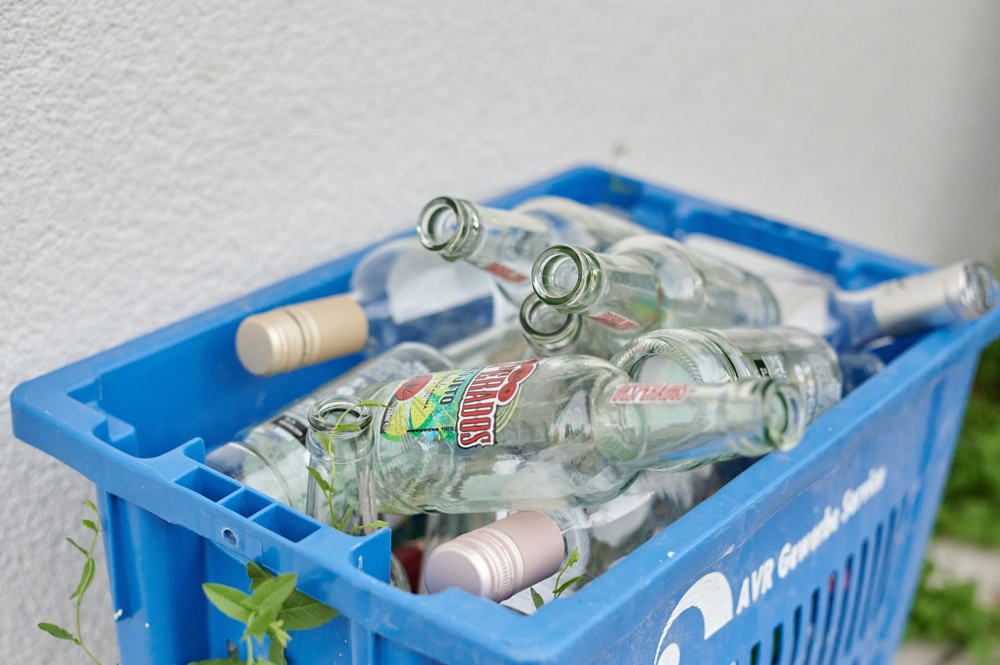
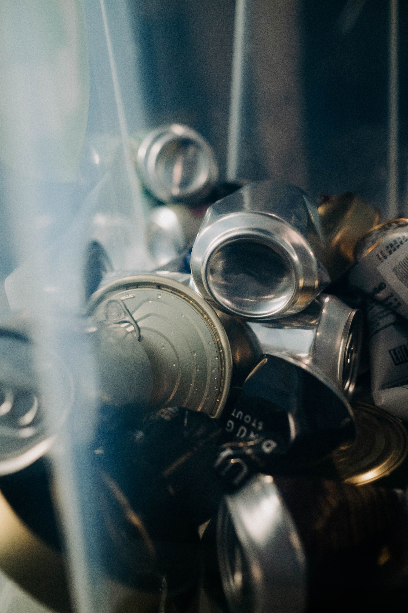

Papel
Separe folhas, jornais e caixas de papelão. Mantenha o material limpo e seco.
Aprenda a separar seus resíduos e contribua para uma comunidade mais sustentável.

Separe os resíduos e confira quais materiais a coleta da sua região recebe.
Separe folhas, jornais e caixas de papelão. Mantenha o material limpo e seco.

Separe garrafas e embalagens plásticas vazias, retirando os restos de produtos.

Garrafas e potes de vidro podem ser destinados à reciclagem. Confira as orientações da coleta local.

Separe latas de alumínio e de aço vazias para encaminhar à coleta seletiva.
O EcoBairro contribui para o ODS 12: Consumo e Produção Responsáveis.
Ao orientar sobre a separação dos resíduos, o projeto incentiva a reciclagem e o cuidado com os recursos naturais.
Conheça o ODS 12 no site da ONU